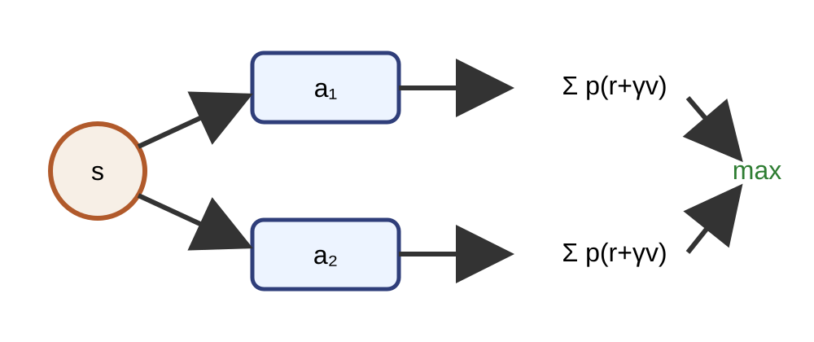
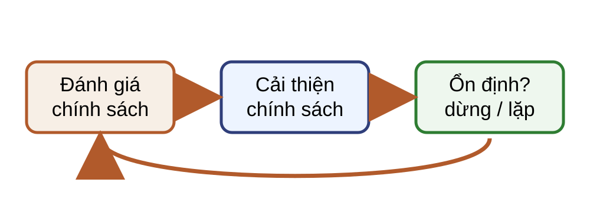
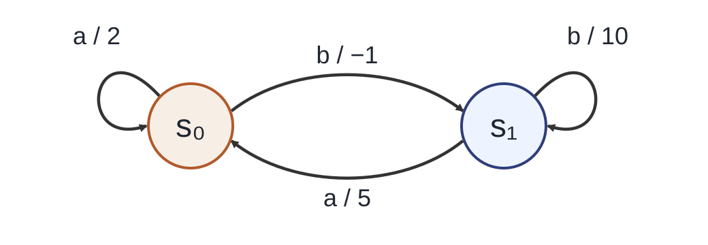
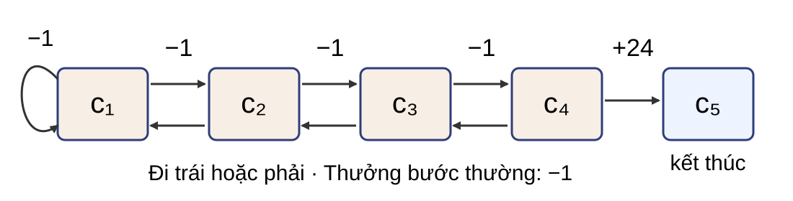
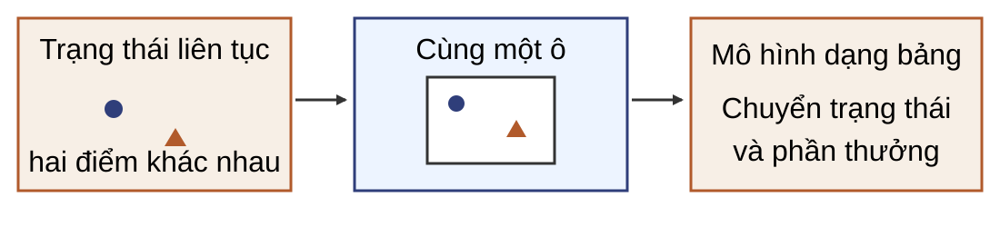

Một lựa chọn tất định Tại $s$, $\gamma=0{,}9$; sau hành động đầu, tác tử tiếp tục tối ưu.
$a_1$ $r=2$, tới $s_1$ chắc chắn
$v_*(s_1)=5\Rightarrow6{,}5$
$a_2$ $r=0$, tới $s_2$ chắc chắn
$v_*(s_2)=8\Rightarrow7{,}2$
Khóa hành động đầu ở $a_2$ cho giá trị lớn hơn.
Giá trị hành động tối ưu Ký hiệu $a\triangleright\pi$: ép $A_0=a$, rồi dùng chính sách tiếp diễn $\pi$ từ $t=1$.
$$q_*(s,a)=\sup_{\pi\in\Pi}\mathbb E^{a\triangleright\pi}[G_0\mid S_0=s].$$
Giá trị tối ưu Gọi $\Pi$ là tập mọi chính sách khả dụng, kể cả phụ thuộc lịch sử và ngẫu nhiên.
$$v_*(s)=\sup_{\pi\in\Pi}v_\pi(s)=\max_{a\in\mathcal A(s)}q_*(s,a).$$
Trong ví dụ, $v_*(s)=7{,}2$.
Toán tử theo chính sách Với chính sách Markov dừng $\pi(a\mid s)$:
$$T^\pi:\mathcal V\to\mathcal V,\qquad (T^\pi v)(s)=\sum_a\pi(a\mid s)\sum_{s',r}p(s',r\mid s,a)[r+\gamma v(s')].$$
$T^\pi$ đơn điệu và là ánh xạ co hệ số $\gamma$ trong chuẩn vô cùng.
“Dừng” nghĩa là không phụ thuộc thời điểm. Tính đơn điệu dùng trọng số không âm; tính co dùng tổng trọng số bằng một. Vì thế $v_\pi=T^\pi v_\pi$ là điểm bất động duy nhất.Nguồn: tr. 6, 10, 31; bổ sung kiểu toán tử và điều kiện chính sách.
Toán tử Bellman tối ưu 
$$T_*:\mathcal V\to\mathcal V,\qquad (T_*v)(s)=\max_a\sum_{s',r}p(s',r\mid s,a)[r+\gamma v(s')].$$
Trong micro-example, áp $T_*$ tại $s$ trả về 7,2. Tập hành động hữu hạn, không rỗng bảo đảm cực đại đạt được.Nguồn: tr. 8, 10.
Bellman cho $q_*$ $$q_*(s,a)=\sum_{s',r}p(s',r\mid s,a)\left[r+\gamma\max_{a'}q_*(s',a')\right].$$
Câu hỏi: vì sao phép cực đại nằm ở trạng thái kế tiếp?
Hành động đầu đã bị khóa; từ $s'$ mới được chọn hành động tối ưu tiếp theo.
Ứng viên tham lam: $\bar\pi(s)\in\arg\max_a q_*(s,a)$.
Chu trình quy hoạch động 
Lặp chính sách luân phiên đánh giá và cải thiện. Tính toán hiện tại dùng giá trị tiếp tục ở các trạng thái kế tiếp.Nguồn: tr. 12–13.
Ba phép toán Đánh giá: $v\leftarrow T^\pi v$. Cải thiện: $\pi\leftarrow\operatorname{Greedy}(v)$. Tối ưu trực tiếp: $v\leftarrow T_*v$. Lặp chính sách tách hai phép đầu; lặp giá trị dùng phép thứ ba.
Không kết luận phương pháp nào luôn nhanh hơn. Chi phí từng vòng và số vòng đều phụ thuộc cấu trúc bài toán.Nguồn: tr. 13, 20, 23.
MDP hai trạng thái 
$\gamma=0{,}9$; chính sách đầu $\pi_0=(a,a)$.
Nhãn cạnh là hành động và phần thưởng. Ví dụ được giữ xuyên suốt phần lặp chính sách.Nguồn: tr. 17.
Đánh giá chính sách đầu $$v_{\pi_0}(s_0)=1+0{,}9v_{\pi_0}(s_0),\quad v_{\pi_0}(s_1)=2+0{,}9v_{\pi_0}(s_0).$$
$v_{\pi_0}=(10,11)$.
Đây là đánh giá chính xác bằng giải hệ Bellman của chính sách cố định.Nguồn: tr. 18.
Cải thiện một bước Trạng thái $a$ $b$ Chọn $s_0$ $10$ $9{,}9$ $a$ $s_1$ $11$ $12{,}9$ $b$
$\pi_1=(a,b)$.
Mọi so sánh dùng cùng $v_{\pi_0}$. Hành động $b$ ở $s_1$ cho $3+0,9\cdot11=12,9$.Nguồn: tr. 19.
Vòng thứ hai Đánh giá $\pi_1$ $v_{\pi_1}=(10,30)$
$q_{\pi_1}(s_0,b)=0+0{,}9\cdot30=27$
Cải thiện $\pi_2=(b,b)$
$v_{\pi_2}=(27,30)$
Đánh giá chính sách lặp $$v_{j+1}=T^\pi v_j,\qquad \Delta_j=\lVert v_{j+1}-v_j\rVert_\infty.$$
Dừng khi $\Delta_j\le\varepsilon_{\mathrm{step}}$; trả về $v_{j+1}$. Nếu $0\lt\gamma\lt1$: $$\lVert v_{j+1}-v_\pi\rVert_\infty\le\frac{\gamma}{1-\gamma}\varepsilon_{\mathrm{step}}.$$
Đánh giá bất đồng bộ Bất đồng bộ Dùng ngay giá trị mới dưới cùng $\pi$.
Công bằng: mỗi trạng thái được cập nhật vô hạn lần nếu quá trình kéo dài.
Lặp chính sách chính xác Đầu vào: $M$, chính sách Markov dừng $\pi$, thứ tự hành động cố định.
Câu hỏi: vì sao không được đổi tùy ý giữa các hành động đồng hạng?
Giá trị có thể không tăng nghiêm trong khi chính sách vẫn đổi qua lại.
Thứ tự toàn cục cố định làm quy tắc phá hòa có tính tái lập. Giải hệ đặc tốn $O(|\mathcal S|^3)$; bước tham lam tốn một lượt duyệt mô hình.Nguồn: tr. 20; bổ sung phá hòa, dừng và chi phí.
Bảo đảm của lặp chính sách $$T^{\pi'}v_\pi=T_*v_\pi\ge T^\pi v_\pi=v_\pi.$$
Tính đơn điệu và tính co cho $v_{\pi'}\ge v_\pi$.
Với đánh giá chính xác và phá hòa cố định, số chính sách xác định hữu hạn nên thuật toán dừng tại chính sách tối ưu.
Nếu chính sách thay đổi ngoài các hành động đồng hạng, cải thiện nghiêm ở ít nhất một trạng thái. Bảo đảm dừng hữu hạn phụ thuộc đánh giá chính xác và quy tắc phá hòa cố định.Nguồn: tr. 21, 33; làm rõ miền áp dụng.
Gridworld năm ô 
$\gamma=0{,}9$; tại $c_1$–$c_4$, chọn Left hoặc Right và chuyển tất định. Left tại $c_1$ giữ nguyên; chuyển thường nhận $-1$. Right tại $c_4$ tới $c_5$ nhận $+10$; $v(c_5)=0$. Lượt sao lưu đầu Từ $v_0=0$, thử hai hành động tại từng ô:
$$v_1=(-1,-1,-1,10,0).$$
Mọi trạng thái đọc cùng bảng $v_0$. Lợi ích ở đích mới truyền tới $c_4$ sau một lượt.Nguồn: tr. 26.
Giá trị lan ngược $k$ $c_1$ $c_2$ $c_3$ $c_4$ $c_5$ 0 0 0 0 0 0 1 -1 -1 -1 10 0 2 -1,9 -1,9 8 10 0 3 -2,71 6,2 8 10 0 4 4,58 6,2 8 10 0
Mỗi lượt truyền lợi ích thêm một cạnh. Các số dùng gamma bằng 0,9 và cập nhật đồng bộ.Nguồn: tr. 27.
Lặp giá trị $$v_{k+1}=T_*v_k.$$
Không đánh giá trọn một chính sách trung gian. Mỗi sao lưu vừa nhìn trước vừa chọn hành động. Trích chính sách từ bảng giá trị đã kiểm tra. Công thức tổng quát xuất hiện sau mô hình và các lượt quét cụ thể.Nguồn: tr. 23.
Một lượt lặp giá trị Đầu vào: $M$, bảng $v$.
Chi phí một lượt:
$$C_{\mathrm{model}}=O\!\left(\sum_s\sum_{a\in\mathcal A(s)}|\operatorname{supp}p_{s,a}|\right).$$
Kiểm phần dư và tái sử dụng lượt quét Tính $w\leftarrow T_*v$ và $\rho\leftarrow\lVert w-v\rVert_\infty$.
Lượt $T_*v$ vừa kiểm phần dư, vừa là lượt VI kế tiếp khi chưa dừng.
Phần dư và chính sách tham lam dùng cùng bảng $v$ tại thời điểm kiểm. Nếu không đạt ngưỡng, $w$ được tái sử dụng làm bảng kế tiếp. Nếu gamma bằng không, một lượt sao lưu đủ.Nguồn: tr. 24, 34; bổ sung phép kiểm phần dư tái lập.
Trích chính sách từ cùng bảng $$\pi_v(s)\in\arg\max_a\sum_{s',r}p(s',r\mid s,a)[r+\gamma v(s')].$$
Câu hỏi: nếu phần dư tính trên $v$ nhưng chính sách trích từ $v'$ khác, chặn nào không còn áp dụng?
Chặn mất mát của chính sách tham lam theo $v$.
Đẳng thức $T^{\pi_v}v=T_*v$ chỉ đúng khi chính sách tham lam theo chính hàm $v$ dùng trong phần dư.Nguồn: tr. 24, 28; bổ sung kiểm tra.
Chi phí phép tính chính Trường hợp Chi phí PI: giải hệ đặc + tham lam $O(|\mathcal S|^3)+C_{\mathrm{model}}$ Mỗi lượt $T_*$ $C_{\mathrm{model}}$ Kiểm phần dư đầu tiên sau khởi tạo Thêm $C_{\mathrm{model}}$ Kiểm tiếp theo nếu chưa dừng Tái sử dụng $w$; mỗi lần thêm $C_{\mathrm{model}}$
Lặp giá trị bất đồng bộ Cập nhật bằng $T_*$, không phải $T^\pi$. Dùng giá trị mới nhất; có thể đổi thứ tự quét. Mỗi trạng thái phải được cập nhật vô hạn lần; dữ liệu không được cũ vô hạn. Tiêu chuẩn dừng cần chứng minh Phần dư $\rho(v)=\lVert T_*v-v\rVert_\infty$ đo độ lệch khỏi Bellman tối ưu.
Chứng minh $T_*$ co và có điểm bất động duy nhất. Chuyển phần dư thành sai số giá trị. Chuyển sai số thành mất mát của $\pi_v$.
Ba câu hỏi hội tụ Điểm bất động có duy nhất không? Mọi khởi tạo có tiến tới đó không? Một chính sách có đạt điểm đó không? Công cụ: tính co trong chuẩn vô cùng.
Quay lại giả thiết và chuẩn đã định nghĩa ở đầu bài.Nguồn: tr. 30–32.
Bất đẳng thức cực đại $$|\max_a x_a-\max_a y_a|\le\max_a|x_a-y_a|.$$
Suy ra $|(T_*u)(s)-(T_*v)(s)|\le\gamma\lVert u-v\rVert_\infty$.
$T_*$ là ánh xạ co $$\lVert T_*u-T_*v\rVert_\infty\le\gamma\lVert u-v\rVert_\infty.$$
Định lý Banach cho điểm bất động duy nhất $\bar v$. $T_*^kv_0\to\bar v$ với mọi $v_0\in\mathcal V$. Không gian hữu hạn chiều với chuẩn vô cùng là đầy đủ.Nguồn: tr. 31–32.
Điểm bất động chặn mọi chính sách Với mọi $\pi\in\Pi$ và chân trời $n$:
$$\mathbb E_\pi\!\left[\sum_{k=0}^{n-1}\gamma^kR_{k+1}\mid S_0=s\right]\le(T_*^n0)(s).$$
Đuôi có độ lớn không quá $\gamma^nR_{\max}/(1-\gamma)$.
Cho $n\to\infty$: $v_\pi(s)\le\bar v(s)$ với mọi $\pi\in\Pi$.
Quy hoạch ngược chặn từng hành động bởi cực đại, kể cả khi chính sách phụ thuộc lịch sử. Chặn đuôi cho phép chuyển sang chân trời vô hạn. Trang này chỉ chứng minh cận trên toàn cục.Nguồn: tr. 9, 31–32; hoàn chỉnh cận trên.
Chính sách tham lam đạt cận trên Chọn chính sách Markov dừng $\bar\pi$ tham lam theo $\bar v$:
$$T^{\bar\pi}\bar v=T_*\bar v=\bar v.$$
Điểm bất động của $T^{\bar\pi}$ là duy nhất, nên $v_{\bar\pi}=\bar v$.
Do đó $\bar v=v_*$ và $\bar\pi$ là chính sách tối ưu.
Cực đại đạt được vì mỗi tập hành động hữu hạn. Chỉ ở đây mới dùng toán tử theo chính sách cho chính sách Markov dừng vừa dựng.Nguồn: tr. 9, 31–32; tách bước đạt cận.
Phần dư chặn sai số giá trị Đặt $\rho=\lVert T_*v-v\rVert_\infty$ và $e=\lVert v-v_*\rVert_\infty$.
$$e\le\lVert v-T_*v\rVert_\infty+\lVert T_*v-T_*v_*\rVert_\infty\le\rho+\gamma e.$$
Suy ra $\displaystyle e\le\frac{\rho}{1-\gamma}$.
Đây là phép suy diễn phần dư sang sai số, không chỉ phát biểu kết quả. Dùng bất đẳng thức tam giác rồi tính co của $T_*$.Nguồn: tr. 32, 34; mở bước chứng minh.
Sai số chặn mất mát chính sách Với $\pi_v$ tham lam theo cùng $v$, $T^{\pi_v}v=T_*v$.
$$L\le\gamma e+\gamma(e+L),\quad L=\lVert v_*-v_{\pi_v}\rVert_\infty.$$
$$L\le\frac{2\gamma}{1-\gamma}e\le\frac{2\gamma}{(1-\gamma)^2}\rho.$$
Tách $T_*v_*-T^{\pi_v}v_{\pi_v}$ qua $T_*v=T^{\pi_v}v$, rồi dùng tính co của hai toán tử. Sau đó chặn $\lVert v-v_{\pi_v}\rVert$ bởi $e+L$ và chuyển vế. Đây là cơ sở của ngưỡng phần dư đã nêu.Nguồn: tr. 32, 34; bổ sung suy diễn đầy đủ.
CartPole còn thiếu mô hình 
Đã có: 324 trạng thái rời rạc, hai hành động. Còn thiếu: $p(s',r\mid s,a)$, kết thúc và thưởng đầy đủ. Lượng tử hóa vẫn gây sai số và bùng nổ trạng thái. Câu hỏi: chỉ có bộ mô phỏng thì phép tổng nào chưa tính chính xác?
Kỳ vọng theo $p(s',r\mid s,a)$.
Chọn công cụ theo dữ kiện Mục tiêu Lựa chọn Biết mô hình, đánh giá $\pi$ Lặp $T^\pi$ hoặc giải hệ Biết mô hình, tối ưu PI chính xác hoặc VI VI cần chặn mất mát Kiểm phần dư; trích từ cùng $v$ Không biết mô hình Ước lượng từ trải nghiệm
Bellman cho $q_*$ là cầu nối tới điều khiển dựa trên giá trị hành động.
Bài tập 9: một lượt VI $\mathcal S=\{s_0,s_1,s_2\}$, $\mathcal A=\{a,b\}$, $\gamma=0{,}9$, $V_0=0$.
$(s,a)$ Kết quả $(p,r,s')$ $(s_0,a)$ $0{,}5:(1,s_0);\ 0{,}5:(-1,s_2)$ $(s_0,b)$ $0{,}5:(0,s_1);\ 0{,}5:(2,s_2)$ $(s_1,a),(s_1,b)$ $(1,2,s_0);\ (1,-1,s_1)$ $(s_2,a),(s_2,b)$ $(1,2,s_1);\ (1,0,s_0)$
Câu hỏi: tính $V_1$, rồi trích chính sách tham lam theo $V_1$.
Từ $V_0=0$, các cực đại cho $V_1=(1,2,2)$. Dùng chính $V_1$: $Q_{V_1}(s_0,a)=1{,}35$, $Q_{V_1}(s_0,b)=2{,}8$; tại $s_1$ được $(2{,}9,0{,}8)$; tại $s_2$ được $(3{,}8,0{,}9)$. Do đó chính sách tham lam theo $V_1$ là $(b,a,a)$.Nguồn: hw3.pdf, Bài 9; phép tính được khai triển.
Bài tập 6: đánh giá dạng ma trận Chứng minh $(I-\gamma P_\pi)v_\pi=r_\pi$ và tính khả nghịch khi $0\lt\gamma\lt1$.
Có thể dùng bán kính phổ của $P_\pi$ hoặc chuỗi Neumann để chứng minh khả nghịch.Nguồn: hw3.pdf, Bài 6.
Bài tập 4: lịch cập nhật Phân biệt đồng bộ và bất đồng bộ; nêu vai trò của thứ tự, công bằng và điểm bất động.
Hai cách có cùng điểm bất động dưới điều kiện hội tụ phù hợp. Không suy ra bất đồng bộ luôn nhanh hơn.Nguồn: hw3.pdf, Bài 4.
Bài tập 7: tính đơn điệu Nếu $u\le v$, chứng minh $T^\pi u\le T^\pi v$ và $T_*u\le T_*v$.
Dùng trọng số xác suất không âm. Với $T_*$, áp bất đẳng thức cho từng hành động rồi lấy cực đại.Nguồn: hw3.pdf, Bài 7.